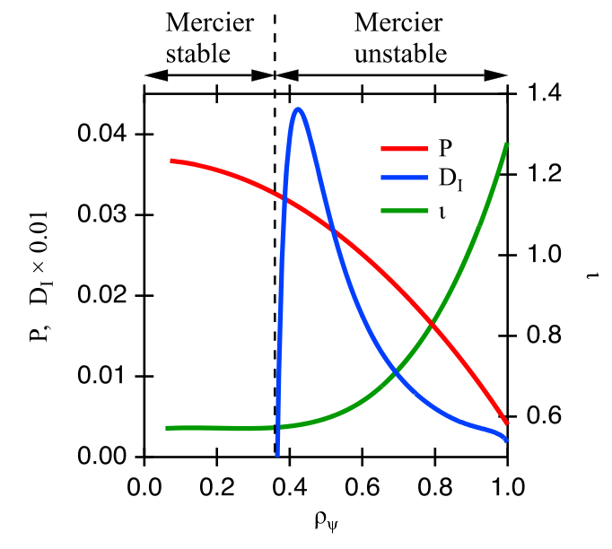
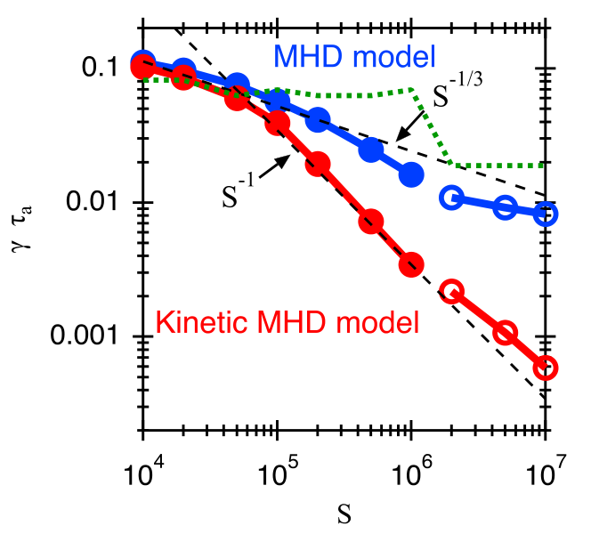
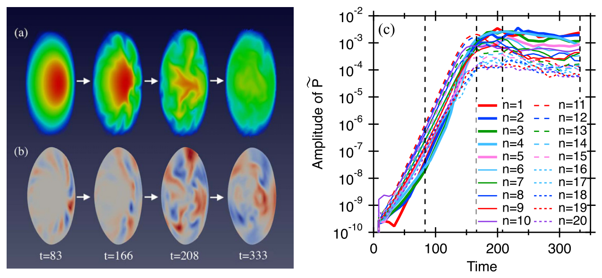
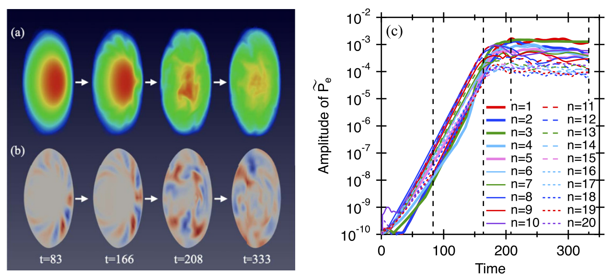
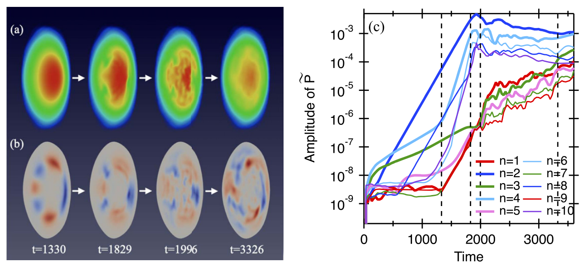
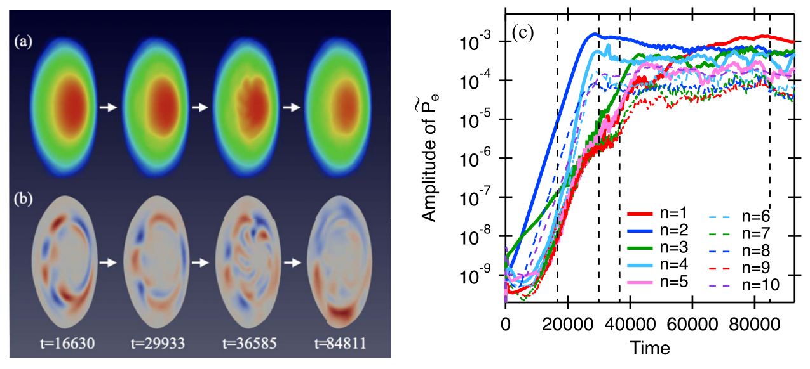
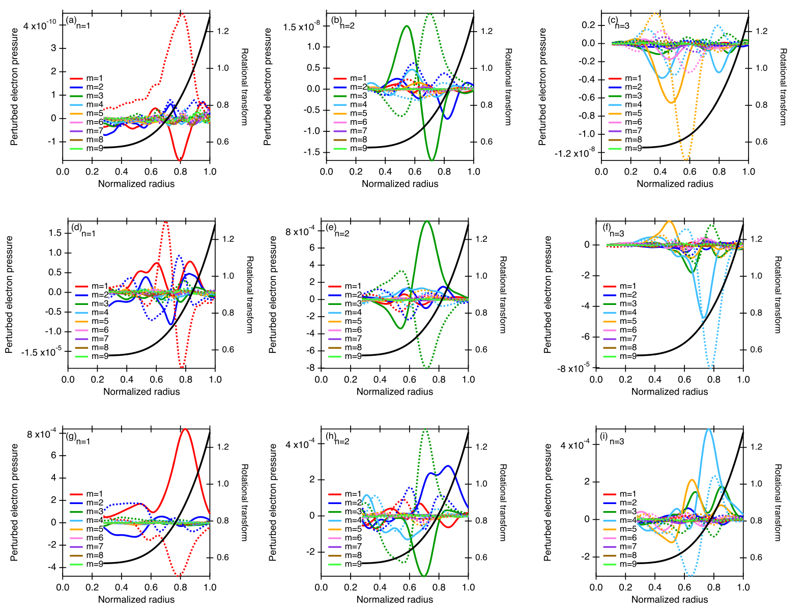
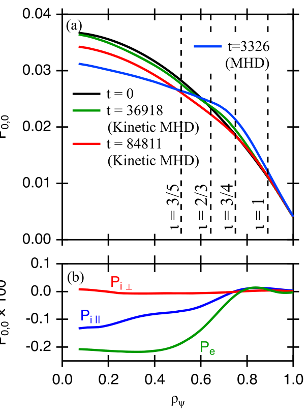
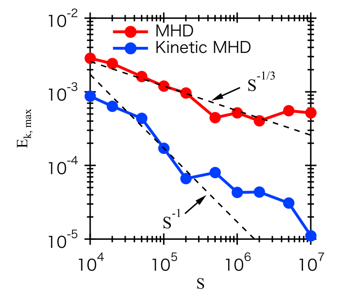

热离子为何能帮助 LHD 在 Mercier 判据之外维持高 beta？
Kinetic thermal ion effects on maintaining high beta plasmas above the Mercier criterion in the Large Helical Device
核心结论：在本文研究的内移位 LHD 平衡和高磁雷诺数条件下，被俘获热离子的进动漂移削弱其对压力驱动扰动的响应。动理学 MHD 模拟因此保留较高核心压力，尽管外围仍有不稳定模及非线性耦合。“超临界稳定”在这里意味着有限扰动下维持高压，并不意味着所有模线性稳定。[§3.3–4，PDF 7–10 页]
作者：M. Sato、Y. Todo；机构：日本 NIFS。发表于 2021-09-23。论文 DOI。报告以用户提供的出版版 PDF 为唯一全文依据；PDF 共 10 页，首面为平台封面，PDF 第 2–10 页对应印刷第 1–9 页。下文页码均指 PDF 页码。
1. 要解释的矛盾，以及本文真正增加的证据
LHD 内移位构型有利于粒子约束，却不容易形成有利于 MHD 稳定性的磁阱；高 beta 时外围存在磁丘。引言援引的实验可以维持约 的体积平均 beta，而较早的流体 MHD 非线性模拟预测核心压力崩塌。本文试图解释这类“实验比简单流体模型更稳定”的差异，而不是求一个普遍适用的 beta 上限。[§1，PDF 2 页]
作者此前的工作已经在线性层面发现被俘获热离子的稳定作用；本文的增量在于把这一机制追踪到非线性演化、模间耦合、压力重分布与最终饱和。它比较同一类平衡下的 MHD 与 kinetic MHD，扫描电阻率对应的磁雷诺数，并选择低、高磁雷诺数各一个案例做完整时序分析。[§1–3，PDF 3–9 页]
这里有三个不同问题：Mercier 指标如何评价初始平衡；有限模数扰动在线性阶段如何增长；非线性阶段是否损失核心压力。本文结果说明三者不能被压缩成一个稳定/不稳定标签。Mercier 指标仍是平衡诊断，但单凭它不能预测本文动理学模型的非线性饱和状态。作者没有给出新的、可取代 Mercier 判据的普适判据。[图1–9；报告判断]
机制的直观解释
螺旋波纹俘获的离子在三维磁场中具有极向进动。若在扰动增长一个显著幅度的时间内，离子能跨过扰动的正、负相位，其相干压力响应就会减弱。于是离子压力向不稳定模提供的有效自由能减少，尤其体现在垂直离子压力扰动上。这个解释依赖“相对于模相位”的漂移时间尺度，不是仅仅比较一个任意轨道频率。[§1、§3.1，PDF 3–5 页]
其中 为线性增长率， 为文中典型俘获离子的极向进动频率， 为本征模最大幅度分量的极向模数。图2采用速度约 的典型离子估算；这不是完整粒子分布的唯一频率。若 ，扰动增长太快，稳定作用较弱。[§3.1，PDF 4–5 页]
2. 模型：离子轨道如何反馈到流体和磁场
计算链条为：HINT 构造平衡 → 初始化电子压力与离子 Maxwell 分布 → MEGA 同步推进漂移动理学粒子和流体场 → 由粒子速度矩得到密度及各向异性离子压力 → 反馈到流体动量和磁场演化 → 在 LCFS 内用 Boozer 坐标做模分解。VMEC 重构用于 Mercier 指标和坐标诊断；不能把整个非线性模拟误认为始终假定嵌套磁面。[§2，PDF 3–4 页]
2.1 导引中心与漂移：原式 (1)–(9)
以下按出版版转写。 是磁场， 为其大小，； 为离子质量和电荷， 为平行速度， 为守恒磁矩。 是质量密度， 是原文定义的轨道变量，二者不可混同。下标平行、垂直均相对于局部磁场。[PDF 3 页]
这些式子把沿场运动、电场漂移以及由磁场非均匀性和曲率造成的漂移放进同一轨道描述。 还包含电子平行压力梯度作用；式 (9) 表达平行能量变化。论文所讨论的稳定化来自轨道跨越扰动相位，不是另加一个经验阻尼系数。
需向作者或代码核实的原文细节：放大核对后，式 (3) 的叉乘对象确实印为 ，分母印为 。与式 (8) 的通常量纲一起读时，这一写法值得核实；本报告忠实保留，没有擅自把它换成常见漂移公式。它是出版式子的复现疑点，并不构成对实际代码错误的证明。[PDF 3 页式 (3)、(8)；报告检查]
2.2 分布函数的 δf 表示与压力矩：原式 (10)–(14)
是第 个标记粒子的权重， 是其相空间体积， 是动能， 是初始分布，。 方法用权重描述相对于背景的分布扰动；背景依赖磁面与能量。轨道响应通过权重的演化进入宏观压力。[PDF 3 页]
δf 不自动等于线性化：将分布写作 ，并把初始 Maxwell 分布作为固定参考，并不意味着后续总分布仍为 Maxwell 分布，也不单凭这一分解就要求 。本文粒子在演化的场中推进，流体也保留非线性项，研究的是非线性饱和。式 (10) 右端只出现背景分布的导数，不足以据此判定采用线性响应，因为左端是沿粒子轨道的导数。[PDF 3–4 页式 (1)–(20)；报告解释]
但固定背景 δf 方法的低噪声优势通常在分布偏离背景较小时更明显；大幅偏离时须检查粒子权重增长、采样及统计收敛。本文没有给出全相空间的 或权重分布，因此不能确认其饱和态在每处都属于小扰动，也不能据此保证任意大偏离都可靠。有关非线性 δf 与统计误差的区别，见方法文献 A revised δf algorithm for nonlinear PIC simulation；有关共振粒子权重增长，见 Qin 等，Physics of Plasmas 15, 063101 (2008)。
在这些求和中是粒子形状函数，不是磁雷诺数。式 (14) 按磁矩加权，因此较大垂直速度的粒子对垂直压力尤为重要；作者将其扰动受抑与被俘获粒子的弱响应联系起来。式 (12) 在论文中按上式书写，未显式给出常见速度矩归一化分母；要据此独立实现程序，仍需核对权重和形状函数的归一化约定。[PDF 3、8–9 页]
2.3 流体—粒子耦合：原式 (15)–(20)
是黏性系数， 为垂直、平行热传导系数， 为电阻率， 为比热比， 为真空磁导率。式 (15) 中离子反馈通过 进入，因此不能再随意添加一份相同的离子压力力。式 (17) 的热传导作用于相对于平衡的电子压力扰动，式 (18) 的电阻项也减去了平衡电流；这应在复现时保持。式 (20) 第一项原文写成 ，结合模型上下文应核对其与平行离子压力的记号关系。[PDF 3–4 页]
流体方程在圆柱坐标 中用四阶有限差分离散；粒子与流体时间推进均为四阶 Runge–Kutta。本文模型方程没有写出显式离子碰撞算符；不能因此自行假设已包含俘获—去俘获碰撞效应，也不能把漂移动理学模型当成全回旋轨道或完整电子动理学模型。[§2.1，PDF 3–4 页；后半为报告边界判断]
3. 平衡、参数与可比性
HINT 平衡与作者 2017 年工作中中心 beta 为 的案例相同，初始压力形状取 ，无净等离子体电流。HINT 不要求预先存在嵌套磁面。为计算 Mercier 指标，在 LCFS 内用相同压力与电流剖面作 VMEC 重构；Boozer 坐标由 VMEC 和 NEWBOZ 获得，仅在 LCFS 内进行 Fourier 分析。[§2.2，PDF 4 页]
是归一化环向磁通。初始密度均匀、离子分布为 Maxwell 分布；由于压力随半径变化，列出的中心温度不能被理解为全半径等温。引言的体积平均 beta 与本节中心 beta 的定义不同，不能拿两个数字直接相减或认定模拟精确复现了某一放电。[PDF 2、4 页]
| 设置 | 原文给定值 | 用途或限制 |
|---|---|---|
| 物种与中心密度 | 氢； | 决定质量密度及 Alfvén 速度 |
| 中心离子温度与磁场 | ， | 属于本案例；不是参数扫描结果 |
| 典型大半径 | 归一化长度 | |
| 耗散 | ； | 平行与垂直热传导之比为 |
| 网格与标记粒子 | ；每格约 64 个，总计约 | 大规模混合模拟；不等于已证明网格收敛 |
| 时间与磁雷诺数 | ， | 增大 对应减小电阻率；所有展示时间均以 为单位 |
参数均见 PDF 4 页 §2.2–3.1。压力采用 归一化。

来源：Sato_2021_Nucl._Fusion_61_116012.pdf，PDF 第 4 页（印刷第 3 页）。下文为图注释义与阅读分析。
读图：横轴为归一化半径 ；红线为压力，按 归一化；绿线为旋转变换 ，读右轴；蓝线为 Mercier 参数，实际画的是 ，读左轴。顶部箭头划分作者采用的稳定与不稳定区。
观察与作用：压力向外下降，旋转变换在外围上升，核心与外围的 Mercier 性质不同。蓝线必须按缩放关系解读，不能把图上几百分之一直接当作 。这一图确立了“初始外围不利，但可能非线性维持”的问题，而没有直接证明动力学稳定。该诊断来自 LCFS 内的 VMEC 重构，不是完整 HINT 磁拓扑图。[§2.2，PDF 4 页]
4. 线性结果：为什么磁雷诺数改变动理学效应的强弱？
低磁雷诺数下，电阻性气球模增长较快，进动来不及削弱响应，两种模型的增长率接近。随着电阻率降低，电阻模变慢，进动效应更有机会发挥作用；在本文扫描中，动理学分支的增长率下降得更快。作者指出，在气球模分支中出现 的标度，与理想气球模充分稳定时的电阻模理论相符；这是借助文献 [19,20] 的物理解释，本文没有重新推导对应色散关系。[§3.1，PDF 4–5 页]
对 ，两模型最不稳定模均为电阻性气球模；对 ，最不稳定模为 交换模。MHD 分支对电阻率依赖很弱，作者判为理想交换模；动理学分支仍明显依赖电阻率，被判为电阻性交换模。这里的“理想模被稳定”不等于“同一平衡下没有电阻模”。[图2；PDF 5 页]

来源：Sato_2021_Nucl._Fusion_61_116012.pdf，PDF 第 5 页（印刷第 4 页）。下文为图注释义与阅读分析。
读图：双对数横轴为磁雷诺数 ，纵轴为无量纲增长率 ；蓝色为 MHD，红色为 kinetic MHD。实心点是电阻性气球模，空心点是 交换模；黑虚线为 与 参考斜率。绿点线画典型俘获离子相对于最不稳定模的进动频率。
观察：低 两条增长率曲线接近； 增大后红线更快下降。在高 区，蓝线变化较弱，而红线仍下降。绿线不必平滑单调，因为用于估计的主导极向模数会改变。
支持与限制：结果支持进动对慢增长模更有效，并支持作者区分理想/电阻性交换模的解释。参考斜率是分区解释，不应宣称所有参数均符合单一幂律；单个典型离子频率也不能替代完整轨道频谱或机制消融。[§3.1，PDF 4–5 页]
5. 非线性结果：决定高压能否保留的是空间传播与压力重分布
5.1 先理解图中的诊断量
这是把离子各向异性压力取迹平均后与电子压力相加的总平均压力，不是只取电子压力，也不是已经进行了磁面平均。只有再取 分量时，才是图8所用的角向平均径向剖面。[§3.2–3.3，PDF 5–9 页]
原文以正弦和余弦分量合成后的径向最大值定义模幅度，并展示各环向模。图3、5用流体总压力扰动；图4、6用电子压力扰动。它们适合比较演化模式及主导模次序，但幅值不宜未经换算直接相除。截面图的扰动均去除了 分量，因此不能单靠下排正负色块判断平均压力是否下降。彩色截面没有数值色条，压力损失要结合图8的剖面判断。[PDF 5–7 页；报告读图提醒]
5.2 低磁雷诺数：两种模型都发生核心压力下降
在 时，外围气球模通过非线性耦合产生低环向模；低模向核心延伸，再通过自耦合改变平均压力分量。动理学模型定性重复这一过程。作者将此视作动理学效应较弱时的模型间基准比较；它不是对任意参数或所有物理量的全面验证。[§3.2，PDF 5–6 页]

来源：Sato_2021_Nucl._Fusion_61_116012.pdf，PDF 第 6 页（印刷第 5 页）。下文为图注释义与阅读分析。
面板 (a)：竖直拉长极向截面上的总压力，从左至右为 。初始高压核心逐渐受到影响，末期中心颜色明显改变。面板 (b)：同一截面去掉 的压力扰动，仅显示 LCFS 内可进行模分解的区域，正负扰动从外围向内发展。面板 (c)：各环向模的压力扰动幅度，横轴时间以 为单位，纵轴为对数；图例覆盖 至 ，竖虚线对应截面时刻。
解释：早期为外围电阻性气球模，随后低模通过非线性耦合增强并扩展至核心。原文把核心压力下降联系到低模自耦合生成的平均分量。该图提供基准崩塌路径；没有色条，不能据颜色提取精确压降，也不能把 (b) 当作平均压力图。[§3.2，PDF 5–6 页]

来源：Sato_2021_Nucl._Fusion_61_116012.pdf，PDF 第 6 页（印刷第 5 页）。下文为图注释义与阅读分析。
面板 (a)：与图3相同时刻的 截面；(b)：去掉 的电子压力扰动；(c)：各环向模电子压力扰动幅度，时间单位与图3相同，纵轴为对数。
观察：外围先失稳，随后扰动向内扩展，至 核心压力明显下降，与图3定性相似。其物理解释是 的模增长太快，进动稳定化较弱。
支持与限制：支持动理学模型在弱效应极限复现流体崩塌情景，不表示两模型饱和值严格一致。(b)、(c) 为电子压力而图3对应总压力；不能仅凭两图曲线高度判定总压扰动减少了多少。[§3.2，PDF 6 页]
5.3 高磁雷诺数：仍然存在模耦合，但没有同样的核心崩塌
在 的 MHD 模拟中， 理想交换模在线性和非线性阶段均主导，扰动由外围影响到核心，最终核心压力下降。动理学模型则明显延缓演化，最终主导模从 转为 ，但强扰动仍主要局限于外围，核心压力更接近初始状态。[§3.3，PDF 6–8 页]

来源：Sato_2021_Nucl._Fusion_61_116012.pdf，PDF 第 7 页（印刷第 6 页）。下文为图注释义与阅读分析。
面板 (a)：总压力截面，时刻为 ；(b)：去掉 的总压力扰动，可在早期辨认 的交换结构；(c)：环向模幅度时序， 在主要增长与饱和阶段占主导。
解释：虽然 也不稳定， 增长明显更快，作者认为其他不稳定模之间的耦合对总体演化影响较小。扰动在非线性阶段进入核心，中心压力下降。高 并未自动带来温和饱和。
边界：比低 案例压降小不等于完全维持高压；与图6比较时须注意时间跨度及压力变量不同。核心压力差异的更清晰证据见图8(a)。[§3.3，PDF 6–7 页]

来源：Sato_2021_Nucl._Fusion_61_116012.pdf，PDF 第 7 页（印刷第 6 页）。下文为图注释义与阅读分析。
面板 (a)：总平均压力截面，核心高压区在整个展示阶段基本保留；(b)：去掉 的电子压力扰动，活动主要在外围；(c)：电子压力环向模幅度，从早期 主导变成晚期 主导。横轴同样以 为单位，但跨度远大于图5。
时刻核对：后三个截面为 、、。第一个截面图内写 ，图注写 ，原文不一致；本报告不替作者选定精确值。
支持与限制：这是“仍有不稳定性但核心压力得以保留”的直接空间证据。不能把末期有限振幅曲线称为完全线性稳定，也不能用更慢增长本身代替饱和态的比较。对最终核心压力和各压力分量，应继续读图8。[§3.3，PDF 7–8 页]
5.4 多阶段耦合：同一个环向模号不保证同一种物理来源
- 在线性阶段，主导模为 ，同时存在较弱的 与 。
- 主导模自耦合生成 平均分量，使 附近压力梯度下降、 附近梯度增大，从而使 模变得重要。
- 与 相互耦合，产生差频的 和和频的 分量。由于 已近饱和，这两个模在约 至 间呈现与 接近的增长率。
- 约 时 饱和，而 继续增长，在 后占主导。晚期其形状恢复为接近线性的 模，作者据此认为最终主导模具有线性交换模来源。
上述阶段来自 §3.3，PDF 7–8 页，图6–8。和频、差频是对文中模耦合关系的说明；本文没有给出逐三波能量传递诊断来量化各通道。

来源：Sato_2021_Nucl._Fusion_61_116012.pdf，PDF 第 8 页（印刷第 7 页）。下文为图注释义与阅读分析。
读图：三列依次为 ，三行依次为 。横轴是归一化半径，左轴为电子压力扰动 Fourier 分量，颜色区分极向模数；黑线为旋转变换，读右轴。各面板的数量级不同，不能只按峰的视觉高度跨面板比较。实、虚线呈现分量曲线，原图注未明确对应正弦/余弦的顺序，因此不作强行指定。
- (a)：早期 主要为外围 ，是后续识别晚期结构的参照。
- (b)：早期 以 为主，即最不稳定的 模。
- (c)：早期 中较明显的 对应 线性模。
- (d)：中期 径向结构与 (a) 不同；作者将其增强归因于 与 的耦合。
- (e)：中期 仍以 为主要分量，结合图6可知其已接近饱和。
- (f)：中期 转为明显的 分量，与压力剖面改变后 附近驱动增强相对应。
- (g)：晚期 又呈现与 (a) 类似的外围 结构；作者据此判为线性不稳定交换模，而不是仅凭模号认定一直由耦合驱动。
- (h)：晚期 保留 及其他谐波，主峰仍处于较外侧；它没有因不再主导而消失。
- (i)：晚期 仍含明显 外围结构，表明次级模在饱和状态中继续存在。
证据边界：径向形状与时序支持作者的模耦合解释，但未提供独立三波能量传递率。PDF 8 页“figure 5(g)”应由上下文理解为本图 (g)。[§3.3，PDF 8 页]

来源：Sato_2021_Nucl._Fusion_61_116012.pdf，PDF 第 9 页（印刷第 8 页）。下文为图注释义与阅读分析。
面板 (a)：横轴为 ，纵轴为总平均压力的 分量，按 归一化。黑线初始，绿、红线为动理学模型的 、，蓝线为 MHD 的 。竖虚线依次标出 的有理面。
动理学模型中心压力仍有所下降，但比 MHD 饱和曲线更接近初态。中期剖面在 与 附近的梯度变化，解释了图7的次级模更替。图中比较的是各模型不同时间的非线性状态，不是相同物理时刻；这里不从曲线估算伪精确的压降百分比。
面板 (b)：晚期 的 压力扰动分量。绿色为电子，蓝色为平行离子，红色为垂直离子；纵轴额外乘了 100，读数不能忘记还原。红线接近零，而电子和平行离子压力在内区出现更明显下降。
物理含义与限制：垂直离子响应受到抑制，与俘获离子进动削弱扰动响应的解释一致；但该图不是按俘获/通过粒子直接分组的结果，也不意味着全部离子压力不变。它支持机制，尚不能单独完成排他性因果证明。[§3.3，PDF 8–9 页]
6. 磁雷诺数扫描：最大动能是压力崩塌强度的代理量
作者观察到核心崩塌时流体动能达到峰值，强流动导致显著压力下降；随后流动减弱，压力仍可能受较弱流动和热传导影响。因此用整个演化过程中的最大动能衡量非线性活动强度。它不是最终时刻的动能，也不是精确的压力损失、热输运系数或实验能量约束时间。[§3.4，PDF 9 页]

来源：Sato_2021_Nucl._Fusion_61_116012.pdf，PDF 第 9 页（印刷第 8 页）。下文为图注释义与阅读分析。
读图：双对数横轴为 ，纵轴为 。本图红色是 MHD、蓝色是 kinetic MHD，与图2配色相反。黑虚线给出 、 的参考斜率。正文定义了动能积分，但该图没有明确写出把纵轴换算成焦耳的归一化尺度，因此按模拟单位比较。
MHD：在 的电阻性气球模主导区，最大动能约按 下降；高 下转由理想交换模决定，趋于对 不敏感。动理学 MHD：在 内约按 下降；在 附近下降弱于这一斜率，因为饱和后低环向交换模变得重要；高 下最大动能总体明显低于 MHD。
支持与限制：这说明非线性饱和机制随参数改变，不能把最不稳定线性模的标度机械外推到所有饱和值。局部点并非严格单调，原图无误差条，不应把小幅回升解释成已证实的新物理。最大动能与压力崩塌相关，但不能直接当作能量约束时间或精确压力损失。[§3.4，PDF 9–10 页]
主要论断的证据强度
| 论断 | 直接证据 | 判断与边界 |
|---|---|---|
| 高磁雷诺数下动理学模型减弱非线性破坏 | 图5与6的空间演化；图8的核心压力；图9的最大动能 | 在指定平衡与耗散设置下有相互补充的数值证据 |
| 稳定化与俘获离子进动有关 | 图2的时间尺度比较；图8(b)垂直离子压力扰动很小；此前线性研究 | 机制一致性较强；本文没有专门关闭进动、其余保持不变的非线性消融 |
| 低磁雷诺数时动理学效应有限 | 图2低端及图3–4的类似崩塌 | 定性支持；诊断压力变量不同，非线性最大动能并非完全一致 |
| 可以解释 LHD 超过 Mercier 条件仍维持高压 | 图1的平衡性质与图6、8的高压保留 | 支持一个物理解释；未对特定放电逐时刻拟合或做实验误差检验 |
| 可推广至其他构型 | 结论中的物理推测 | 作者明确将托卡马克分析列为未来工作；本文未验证 |
7. 批判性评价：可信到什么程度？
最有说服力的部分是跨诊断的一致性：不仅有线性增长率降低，还有截面形状、径向平均压力、压力分量和磁雷诺数扫描；低磁雷诺数对照也说明稳定化不是模型一换就自动出现。尤其图7说明作者没有把非线性过程简化为“线性增长率越低，饱和必然越低”。[PDF 5–9 页；报告评价]
作者明确的适用范围与未来工作：研究对象是特定内移位高 beta LHD 平衡；托卡马克不存在相同的螺旋波纹俘获离子，但作者认为曲率和磁场梯度漂移跨越磁力线的本质机制可能适用于其他缓慢增长的压力驱动不稳定性，并计划研究托卡马克。[§4，PDF 10 页]
阅读者认为还缺的验证：本文未展示网格、时间步、标记粒子数的系统收敛扫描；未报告随机种子误差或图9的误差条；未列出代码版本、完整输入文件、运行时长和核时。粒子数很大并不能替代收敛性证据。这里的“未展示”只说明本篇论文不能回答，不代表作者一定没有做过。[§2及全文覆盖；报告评价]
因果归因仍有加强空间：MHD 与 kinetic MHD 的差别不只是一个可开关的进动项；粒子响应、各向异性压力和耦合方式均不同。图8(b)很符合作者机制，但单凭垂直压力扰动小，不能完全排除其他动理学响应的贡献。理想的下一步应加入轨道分类、粒子功与能量传递诊断，再设计守恒性可控的机制比较。[图2、8；报告推断]
物理外推需要约束：本文没有系统扫描平衡形状、压力剖面、碰撞率、径向电场和温度比；也未在本文模型中完整处理有限拉莫尔半径和电子动理学效应。它支持“有些 Mercier 不利平衡可在动理学非线性层面温和饱和”，不足以支持“Mercier 约束可以在任何设计中删除”。[§2–4；报告判断]
有限时间的维持：图6最长展示到 附近，图8比较的是各模型不同演化时间的饱和状态。该对照有物理意义，但不能证明带加热、燃料补给和长期输运的稳态性能；原方程未给出维持实验放电所需的完整外源模型。[图5–8、式(15)–(20)]
原文排版和读图歧义记录
- PDF 8 页正文写“figure 5(g)”，但图5没有 (g) 面板，上下文与图7(g)一致。报告按图7(g)解释，并保留此校对说明。
- 图6第一时刻图内标注为 ，图注写 。报告标明不一致，不择其一充当精确数据。
- 式 (3)、(12)、(20) 的记号或归一化问题见模型节；报告未用常见公式默默替换原式。
- 图2与图9的模型配色恰好相反。图7的实、虚线没有在图注中明确说明对应正弦还是余弦，本文不强行指定其一。
8. 可以借鉴什么，以及怎么迁移
从静态稳定性筛选走向分层验证
借鉴对象：平衡指标、线性谱、非线性压力保留三层证据链。它适合研究“判据不利但实验或模拟表现温和”的构型。先确认平衡及归一化，再算主导谱，最后只对代表性工况做非线性模拟，并同时记录核心压力和动能峰值。成本从平衡计算递增到大规模混合模拟；失败风险是平衡映射误差或坐标变换误差被误认为稳定性差异。不要直接把此论文当作放宽所有优化约束的依据。[借鉴图1–9；报告建议]
用相位穿越时间挑选值得做动理学模拟的案例
借鉴对象：比较 与相对于模相位的轨道频率。先用较便宜的轨道跟踪统计被俘获粒子的频率分布，再与目标模增长率比较，筛选两者相近的参数区进行高成本模拟。前提是能够确定模相位与有代表性的粒子群；如果只用一个典型粒子、忽略模的旋转或电场引起的进动改变，筛选可能误判。资源主要是轨道样本、磁场插值与少量线性算例。[借鉴图2；报告建议]
追踪径向结构，而不只画模幅度
借鉴对象：图6–8把模幅度、径向 Fourier 分量、平均剖面和有理面联系起来。迁移时同步保存主导环向模的多个极向分量及压力梯度，区分同一模号在线性、耦合驱动和晚期阶段的来源。主要成本是场数据存储和后处理；若坐标随平衡变化很大，使用初始坐标可能导致解释混杂，应检查映射适用性。[报告建议]
拆开电子、平行离子和垂直离子压力
借鉴对象：图8(b)的分量诊断。即使总压力变化不大，分量差异也能检验候选机制。迁移时统一压力归一化，分别记录空间剖面及粒子贡献，避免把电子压力变化直接等同总压损失。增加诊断输出的成本较低，但若只看单个晚期切片而没有粒子群与能量收支，因果解释仍不充分。[报告建议]
9. 后续研究：从证据缺口出发的可检验计划
以下是报告提出的研究计划，不是论文已经完成的工作；没有进行系统新颖性检索，不声称“首次”或“尚无人研究”。成功阈值应在观察结果前确定，并高于数值误差。
优先级一：确认长期、高磁雷诺数结果的数值稳健性
原文动机：高磁雷诺数动理学演化较长，粒子—网格计算量大，但未展示收敛误差。假设：核心压力保留与低最大动能在分辨率和粒子数改变后仍成立。最小实验：选 的 MHD 与 kinetic MHD 两个基准，分别细化网格、增加粒子数、缩小时间步，并至少比较两个粒子初始化种子；不能同时改变所有项后声称定位了误差来源。
指标：主导增长率、核心压力变化、最大动能、主导模转换时刻和总能量预算。建议成功标准：增长率及核心压力保留比例的相对变化小于预先约定的 5%，最大动能变化小于 10%，且两模型差异显著大于数值散布。若模型差异随细化消失或结论翻转，则否定稳健性假设。资源与风险：需要 HPC，成本至少多个原规模运行；没有核时数据，不能给可靠绝对预算。较粗网格的预试验只用于估算，不能替代最终验证。
优先级二：定量验证进动削弱响应的因果通道
原文动机：机制证据主要由时间尺度和压力分量构成。假设：相位穿越较快的被俘获粒子群，对驱动模的相干压力响应和净能量交换更小。最小实验：先在已保存场上按俘获类型、能量和俯仰角分组跟踪轨道，记录粒子相对于主导模的相位；再做少量自洽参数比较。基线是同一模拟中的慢进动俘获粒子与通过粒子，避免粗暴删除漂移项导致非物理守恒破坏。
指标：分组压力响应幅相、对模的功率交换、相位相关时间，以及 的分布。成功标准：快进动组的相干响应减弱且能量收支解释了主要稳定化差异，并在数值误差内可重复。若只见总压差异而分组响应不随相位穿越改变，则这一简单归因不足。资源与风险：后处理轨道研究成本中等，自洽试验高；分组权重不一致会造成伪相关。
优先级三：加入碰撞和径向电场，寻找机制失效边界
原文动机：进动与俘获性质是核心机制，而本文未作碰撞率和径向电场扫描。假设：当去俘获时间变短或电场显著改变相对于模的进动时，稳定化强度发生可预测变化。最小实验：在同一平衡上先做轨道层面的有限碰撞率与径向电场参数扫描，再选择快、慢相位穿越各一例做自洽非线性验证。基线是原文无显式离子碰撞、未单列外加径向电场的设置。
指标：俘获份额、有效相位穿越频率、增长率、核心压力保留与最大动能。成功标准：变化方向与独立轨道诊断一致，并超过收敛误差；若轨道预测与自洽结果系统背离，需要修正简化时间尺度模型。资源与风险：需要守恒碰撞算符和与平衡一致的电场模型；随意叠加电场可能同时改变平衡与流剪切，造成混杂。
更长期：从 LHD 单平衡扩展到构型与实验验证
作者明确提出的方向：研究托卡马克中的离子动理学效应。[§4，PDF 10 页] 报告建议的具体检验：先选少量具有不同轨道类型的三维或轴对称平衡，保持主要无量纲参数尽量可比，比较流体和动理学结果。假设是有效相位穿越而非“装置名称”决定稳定化。指标为增长率、径向侵入范围和压力保留；若相位穿越预测不能跨平衡解释结果，就不能推广为通用规则。跨装置模拟还需控制磁剪切、压力梯度、模结构差异，资源与建模风险均高。与实验比较应另外指定放电、诊断合成及误差范围，不能只比一个 beta 数字。
10. 复现路线、来源与覆盖说明
最小复现顺序：先核对 HINT 平衡和 LCFS 内 VMEC/Boozer 映射，复现图1；再复现图2低、高磁雷诺数的线性主导模；接着用图3–4检查弱动理学效应极限；最后运行图5–8所需长时间非线性演化并做图9扫描。应保持流体/动理学两模型的背景平衡、耗散与压力诊断定义一致。
已知计算资源：论文致谢提到 NIFS Plasma Simulator（NEC SX-Aurora TSUBASA）和 RIKEN Fugaku。本文未给运行核数、墙钟时间、总核时与峰值内存，不宜从机器名称估算复现成本。未在提供 PDF 中发现代码仓库、可下载输入或原始数值数据链接；这与“代码不公开”并非同一个结论。[PDF 10 页]
仍需获取：具体平衡文件、计算域与边界条件、扰动初始化、时间步策略、粒子加载及权重归一化、平衡外区域处理、代码版本、压力/能量完整归一化和原始诊断输出。本文给出了关键模型与参数，但不是可直接运行的完整复现包。式 (3)、(12)、(20) 应结合代码或作者说明核对。
| 材料 | 覆盖状态 | 说明 |
|---|---|---|
| 用户提供出版版 PDF | 全文已读，逐页视觉核对 | Sato_2021_Nucl._Fusion_61_116012.pdf；10 页，包括平台封面和 9 页文章 |
| 正文、公式、结论与致谢 | 已覆盖 | §1–4，公式 (1)–(20)；报告逐项解释模型，保留可疑原文记号 |
| 全部原文科研插图 | 图1–9，已裁剪、嵌入、逐图解释 | 图7的九个面板及其余多面板均覆盖；图内细字可点击打开原分辨率 |
| 表格、附录与未编号科研图 | 提供 PDF 中未发现 | 平台封面广告和徽标不属于论文科研图；报告表格均为阅读整理 |
| 参考文献 | 已核对依赖关系，未逐篇追读全文 | [8] 为先前非线性 MHD；[9,10] 为线性热离子研究；[11–15] 为混合模型与粒子方法；[16–18] 为平衡与坐标；[19,20] 为电阻模标度解释 |
| 补充材料、代码与原始数据 | 未获取，不能宣称已覆盖 | 提供 PDF 无明确补充文件入口；2026-09-24 尝试 DOI 页面未能访问，检索未取得补充全文。未将其他版本的图号或结果混入 |
本报告的科学论断依据用户提供的原文，定位格式为章节、PDF 页码及图/式号；外部访问仅用于核查材料入口，不以搜索摘要替代论文证据。正式来源入口。阅读范围是“全部已获取材料”，不是“所有可能存在的发表材料”。
公式由 LaTeX 在制作阶段转为 MathML，并在每式的 annotation 和 data-latex 属性内保留源码。正文、图片、样式与公式均可离线阅读，无须运行远程脚本。图清单见 figure-manifest.json。
显示检查记录：原 PDF 全页及全部裁剪图均已逐张视觉核对；目录、图片路径、图清单与公式转换经过结构检查。浏览器访问策略阻止了本地页面预览，因此未完成 HTML 桌面、窄屏和打印布局的实际视觉验收；不能将此结构检查等同于浏览器显示验收。